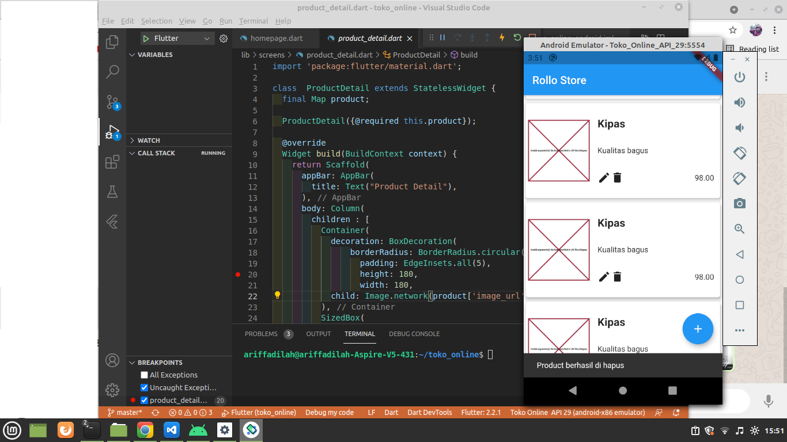

Halaman frontend
Dengan membuat Laravel membaca data API ke flutter
Mengisi data
Mengisi data dengan android studio dengan bahasa flutter
Hasil data

Hasil data yang sudah ditambahkan dan hasilnya
Hasil hapus data
Menghapus data kompor dan terdapat di database juga dan sudah tidak ada maupun di laravel
Tampilan di flutter

Di data dalam flutter bisa mengedit,mengahpus dan menambahkan data seperti contoh gambar diatas ini
Technologies:
- -Laravel V8
- -Android Studio
- -Flutter
- -CSS
- -MYSQL
- -PHP
- -BOOTSTRAP V5